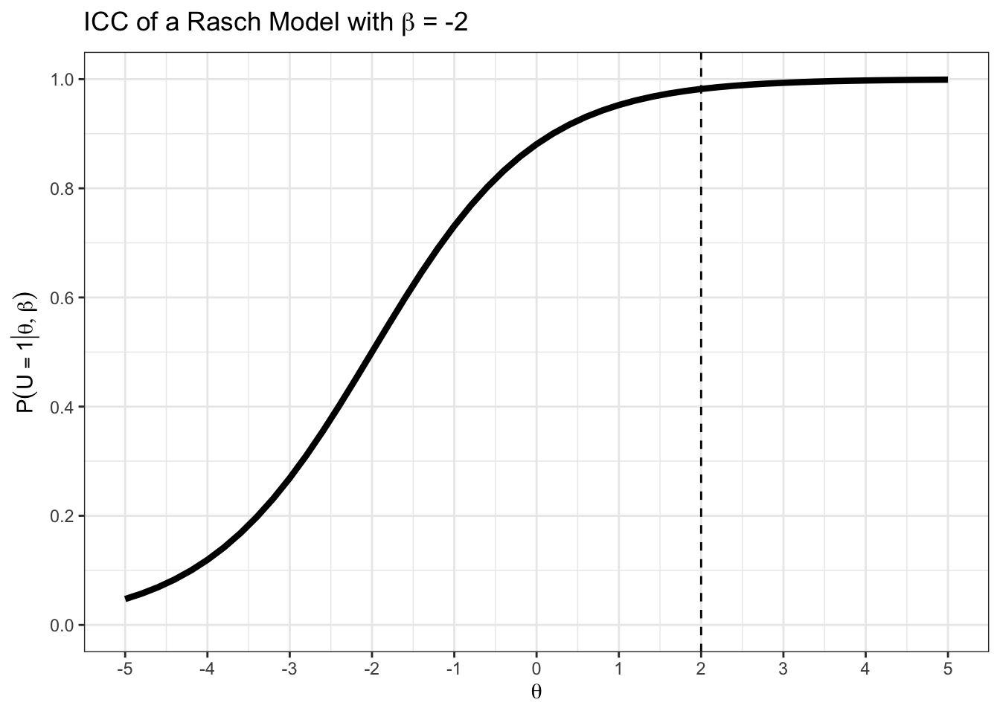
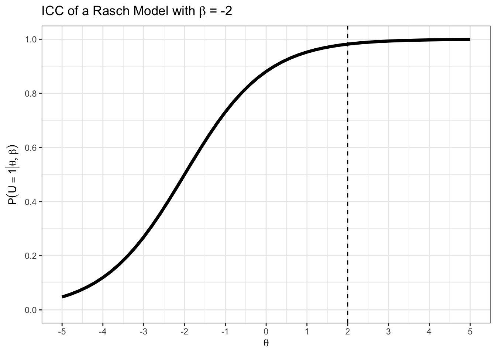
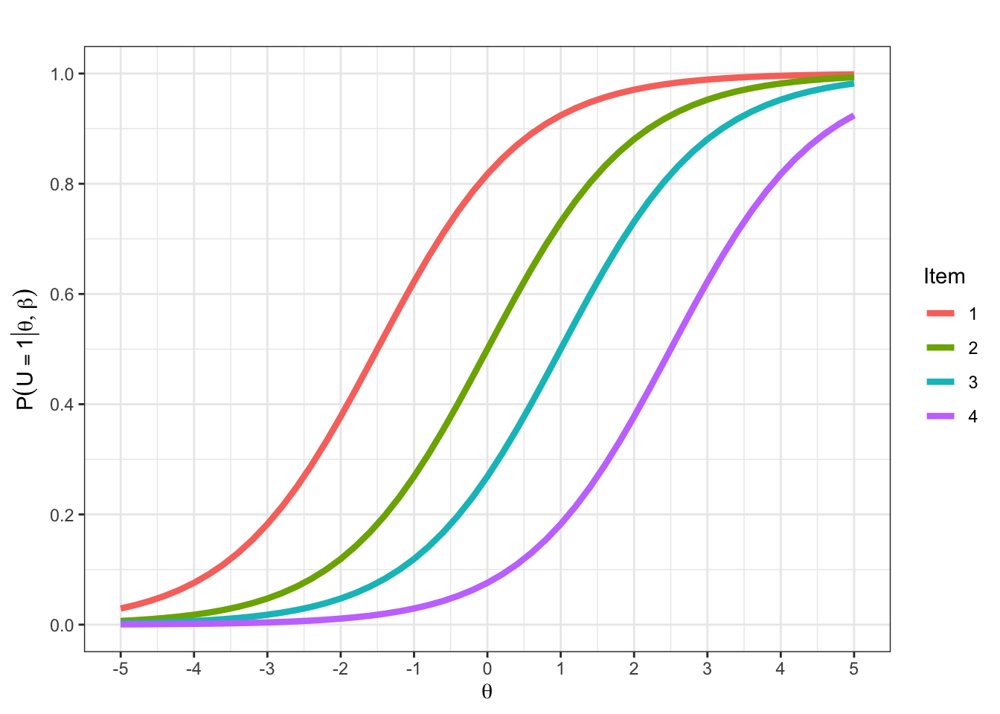
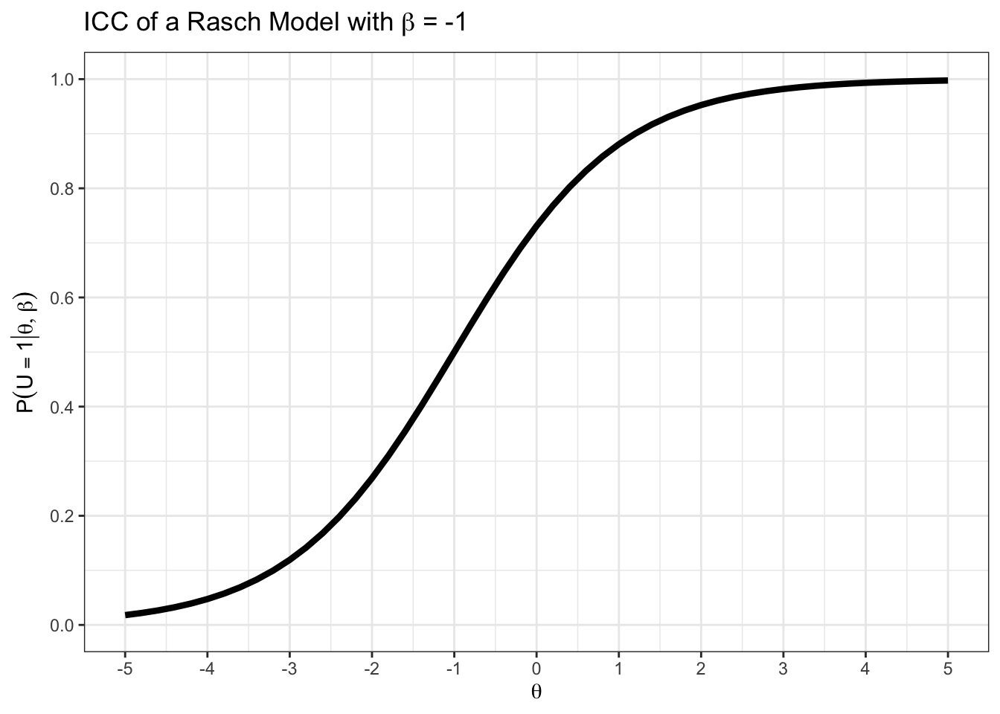
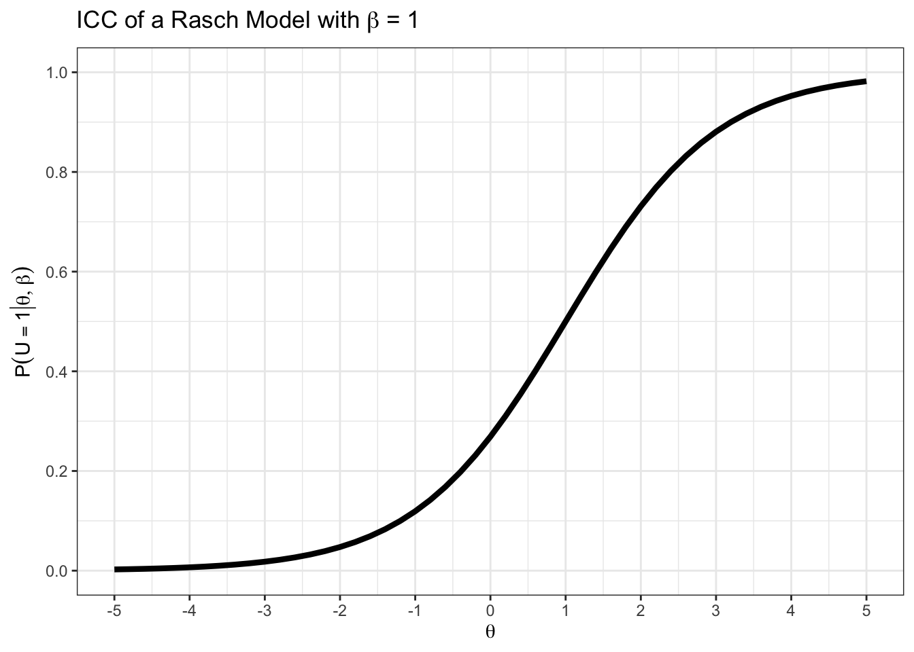
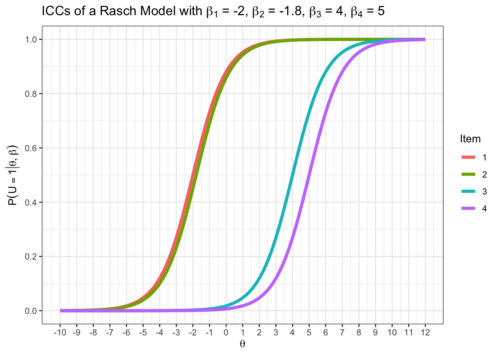
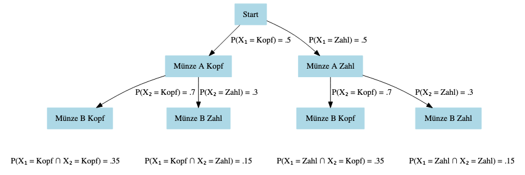
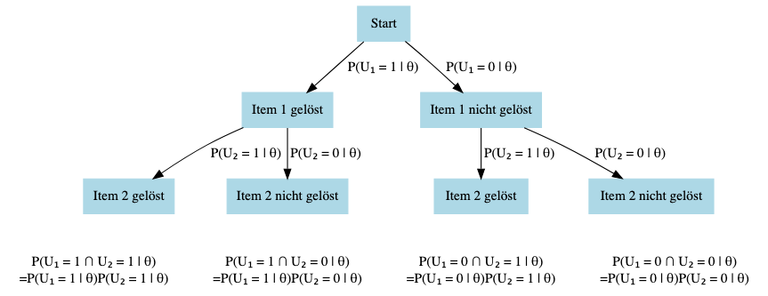
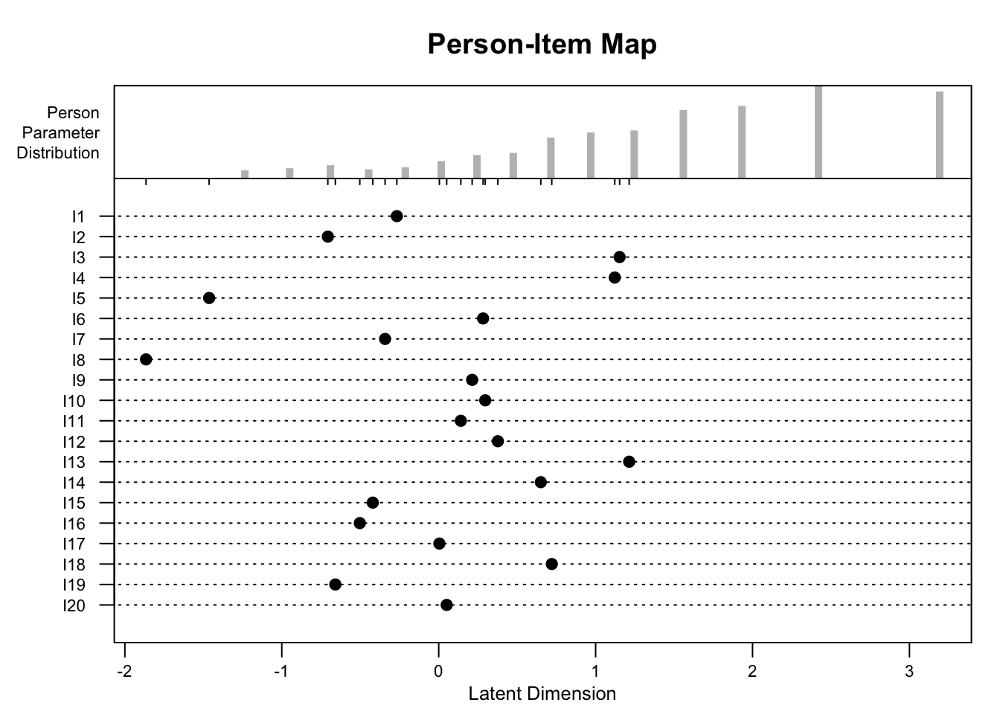

teachIRT::icc_rasch(beta = -2) +
ggplot2::geom_vline(xintercept = 2, linetype = 2)
Was bedeuten die folgenden Wahrscheinlichkeiten inhaltlich?
\(P(U_{14} = u_{14})\)
\(P(U_{1m} = u_{1m})\)
\(P(U_{im} = 0)\)
\(P(U_{2j} = 1)\)
\(P(U_{14} = u_{15})\)
\(P(U_{ij} = 1)\)
\(P(U_{ij} = 0)\)
\(P(U_{ij} = u_{ij})\)
Wahrscheinlichkeit, dass die Antwort von Person 1 auf Item 4 der tatsächlich beobachteten Antwort \(u_{14}\) entspricht.
Wahrscheinlichkeit, dass die Antwort von Person 1 auf das letzte Item \(m\) der tatsächlich beobachteten Antwort \(u_{1m}\) entspricht.
Wahrscheinlichkeit, dass Person \(i\) auf dem letzten Item \(m\) die Antwort \(0\) gibt.
Wahrscheinlichkeit, dass Person 2 auf einem bestimmten Item \(j\) die Antwort \(1\) gibt.
Wahrscheinlichkeit, dass die Antwort von Person 1 auf Item 4 dem beobachteten Wert auf Item 5 (\(u_{15}\)) entspricht.
Wahrscheinlichkeit, dass Person \(i\) auf Item \(j\) die Antwort \(1\) gibt.
Wahrscheinlichkeit, dass Person \(i\) auf Item \(j\) die Antwort \(0\) gibt.
Wahrscheinlichkeit, dass Person \(i\) auf Item \(j\) der tatsächlich beobachteten Antwort \(u_{ij}\) entspricht.
Die Wahrscheinlichkeiten in dieser Aufgabe sind teilweise inhaltlich etwas ungewöhnlich. Einer Wahrscheinlichkeit wie \(P(U_{14} = u_{15})\) werden Sie in der IRT vermutlich nie begegnen. Dennoch ist es hilfreich, die Notation Zeichen für Zeichen lesen zu können. Den Wahrscheinlichkeiten in den Aufgaben (f)-(h) werden Sie hingegen noch öfter begegnen.
Betrachten Sie die binäre Datenmatrix aus der Aufgabe zu Summenscores. Welche der folgenden Aufgaben wäre prinzipiell lösbar? Begründen Sie.
Lesen Sie \(U_{12}\) aus der binären Datenmatrix ab.
Lesen Sie \(u_{23}\) aus der binären Datenmatrix ab.
Lesen Sie \(P(U_{14} = u_{14})\) aus der binären Datenmatrix ab.
Nicht lösbar
Lösbar
Nicht lösbar
Das Rasch-Modell definiert explizit die Wahrscheinlichkeit einer Testantwort \(u_{ij}\):
\[\begin{equation} P(U_{ij} = u_{ij} | \theta_?, \beta_?) = \frac{ exp(u_{ij}(\theta_? - \beta_?)) }{ 1 + exp(\theta_? - \beta_?) } \end{equation}\]
Wofür stehen \(\theta\) und \(\beta\) im Rasch-Modell?
\(\theta\): Personenparameter
\(\beta\): Itemparameter
Die Indizes für \(\theta\) und \(\beta\) fehlen in der Formel zum Rasch-Modell. Versuchen Sie, die Indizes zu ergänzen, ohne auf den Folien oder in der Formelsammlung nachzusehen. Überprüfen Sie Ihre Antwort mit der Formelsammlung.
\[\begin{equation} P(U_{ij} = u_{ij} | \theta_i, \beta_j) = \frac{ exp(u_{ij}(\theta_i - \beta_j)) }{ 1 + exp(\theta_i - \beta_j) } \end{equation}\]
In welchem Wertebereich sind \(\theta\) und \(\beta\) jeweils definiert?
\(\theta, \beta \in \mathbb{R}\)
Sie haben in der ersten Aufgabe in diesem Abschnitt geübt, die Notation von Wahrscheinlichkeiten für Ereignisse in der Datenmatrix zu lesen. Dieses Wissen können Sie hier direkt anwenden. Erklären Sie die linke Seite der Gleichung zum Rasch Modell mit Worten.
Die Wahrscheinlichkeit (\(P\)), dass die Antwort von Person \(i\) auf Item \(j\) (Zufallsvariable; \(U_{ij}\)), dem beobachteten Wert von Person \(i\) auf item \(j\) (\(u_{ij}\)) entspricht (\(=\)), gegeben (\(|\)) des Personenparameters von Person \(i\) (\(\theta_i\)), und des Itemparameters von Item \(j\) (\(\beta_j\)).
Leiten Sie aus der allgemeinen Formel der Antwortwahrscheinlichkeit im Rasch-Modell (siehe oben) je eine Formel für die Lösungs- und Nichtlösewahrscheinlichkeit im Rasch-Modell her. Überprüfen Sie Ihr Ergebnis mit der Formelsammlung, die Ihnen auch in der Prüfung zur Verfügung stehen wird.
Gegeben ist die allgemeine Formel für die Antwortwahrscheinlichkeit im Rasch-Modell:
\[\begin{equation} P(U_{ij} = u_{ij} | \theta_i, \beta_j) = \frac{ exp(u_{ij}(\theta_i - \beta_j)) }{ 1 + exp(\theta_i - \beta_j) } \end{equation}\]
Fall 1: Lösewahrscheinlichkeit
Die Lösewahrscheinlichkeit erhalten Sie, wenn Sie \(u_{ij} = 1\) setzen:
\(P(U_{ij} = 1 | \theta_i, \beta_j) = \frac{ exp(1 \cdot (\theta_i - \beta_j)) }{ 1 + exp(\theta_i - \beta_j) } = \frac{ exp((\theta_i - \beta_j)) }{ 1 + exp(\theta_i - \beta_j) }\)
Fall 2: Nicht-Lösewahrscheinlichkeit
Die Nicht-Lösewahrscheinlichkeit erhalten Sie, wenn Sie \(u_{ij} = 0\) setzen:
\(P(U_{ij} = 0 | \theta_i, \beta_j) = \frac{ exp(0 \cdot (\theta_i - \beta_j)) }{ 1 + exp(\theta_i - \beta_j) }= \frac{ exp(0) }{ 1 + exp(\theta_i - \beta_j) } =\frac{ 1 }{ 1 + exp(\theta_i - \beta_j) }\)
Verwenden Sie die alternative Schreibweise der logistischen Funktion aus den grundlegenden Rechenkompetenzen, um eine Schreibweise der Lösungswahrscheinlichkeit zu erhalten, die man leichter im Taschenrechner eingeben kann.
\(P(U_{ij} = 0 | \theta_i, \beta_j) = \frac{ exp(\theta_i - \beta_j) }{ 1 + exp(\theta_i - \beta_j) }= \frac{ 1 }{ 1 + exp(-(\theta_i - \beta_j)) }= \frac{ 1 }{ 1 + exp(-\theta_i + \beta_j)) }= \frac{ 1 }{ 1 + exp(\beta_j-\theta_i) }\)
Berechnen Sie die Wahrscheinlichkeit, dass eine Person \(i\) mit \(\theta_i = 2\) ein Item \(1\) mit \(\beta_1 = -2\) löst. Berechnen Sie die Wahrscheinlichkeit, dass die selbe Person ein Item \(2\) mit \(\beta_2 = 0\) nicht löst.
Lösewahrscheinlichkeit
\(P(U_{ij} = 0 | \theta_i, \beta_j) = \frac{ 1 }{ 1 + exp(\beta_j-\theta_i) }= \frac{ 1 }{ 1 + exp(-2-2) }\approx.98\)
Nicht-Lösewahrscheinlichkeit
\(P(U_{ij} = 0 | \theta_i = 2, \beta_1 = -2) = \frac{ 1 }{ 1 + exp(\theta_i - \beta_j) }= \frac{ 1 }{ 1 + exp(2 + 2) }= \frac{ 1 }{ 1 + exp(4) }\approx 0.02\)
Sie können Ihr Ergebnis auch ungefähr anhand der ICC (siehe nächster Aufgabenblock) überprüfen:
teachIRT::icc_rasch(beta = -2) +
ggplot2::geom_vline(xintercept = 2, linetype = 2)
Den Umgang mit Lösungswahrscheinlichkeiten im Rasch- und den noch folgenden IRT-Modellen sollten Sie im Schlaf beherrschen. Mit der Funktion teachIRT::p_rasch(theta, beta) können Sie sich zum Üben selbst Aufgaben zur Berechnung von Lösungswahrscheinlichkeiten stellen. Kopieren Sie dazu einfach den R-Code in Ihre IDE (z.B. RStudio):
# Zufällige Parameterwerte ziehen
theta <- rnorm(1) |> round(2)
beta <- rnorm(1) |> round(2)
paste("Personenparameter:", theta) |> print()[1] "Personenparameter: -0.93"paste("Itemparameter:", beta) |> print()[1] "Itemparameter: 0.4"loesung <- teachIRT::p_rasch(theta, beta)
paste("Lösewahrscheinlichkeit:", loesung) |> print()[1] "Lösewahrscheinlichkeit: 0.209159365213063"paste("Nicht-Lösewahrscheinlichkeit:", 1-loesung) |> print()[1] "Nicht-Lösewahrscheinlichkeit: 0.790840634786937"In der Vorlesung haben Sie sogenannte Item Characteristic Curves (ICCs) kennengelernt.
Was befindet sich bei ICCs jeweils auf der x- und y-Achse?
y-Achse: Die Wahrscheinlichkeit ein Item zu lösen
x-Achse: Fähigkeitskontinuum
Erzeugen Sie händisch die ICC für ein Item mit \(\beta = 1\) im Rasch-Modell.
Sie könnten Näherungsweise die folgenden Wahrscheinlichkeiten berechnen und in einem Graph eintragen:
theta <- seq(-5, 5, 1)
for (i in 1:length(theta)) {
paste(
"Lösungswahrscheinlichkeit bei einer Fähigkeit von",
theta[i], ":",
round(teachIRT::p_rasch(theta[i], beta = 1), 2)
) |> print()
}[1] "Lösungswahrscheinlichkeit bei einer Fähigkeit von -5 : 0"
[1] "Lösungswahrscheinlichkeit bei einer Fähigkeit von -4 : 0.01"
[1] "Lösungswahrscheinlichkeit bei einer Fähigkeit von -3 : 0.02"
[1] "Lösungswahrscheinlichkeit bei einer Fähigkeit von -2 : 0.05"
[1] "Lösungswahrscheinlichkeit bei einer Fähigkeit von -1 : 0.12"
[1] "Lösungswahrscheinlichkeit bei einer Fähigkeit von 0 : 0.27"
[1] "Lösungswahrscheinlichkeit bei einer Fähigkeit von 1 : 0.5"
[1] "Lösungswahrscheinlichkeit bei einer Fähigkeit von 2 : 0.73"
[1] "Lösungswahrscheinlichkeit bei einer Fähigkeit von 3 : 0.88"
[1] "Lösungswahrscheinlichkeit bei einer Fähigkeit von 4 : 0.95"
[1] "Lösungswahrscheinlichkeit bei einer Fähigkeit von 5 : 0.98"Zur Kontrolle:
teachIRT::icc_rasch(beta = 1)
Lesen Sie die Itemschwierigkeiten der Items aus den folgenden ICCs ab:

\(\beta_1 = -1.5\)
\(\beta_2 = 0\)
\(\beta_2 = 1\)
\(\beta_2 = 2.5\)
Plotten Sie die ICC für ein Item mit \(\beta = -1\) mit Hilfe der Funktion teachIRT::icc_rasch() und probieren Sie aus, was passiert, wenn Sie andere Werte einsetzen.
Mit ?teachIRT::icc_rasch() können Sie sich die Hilfe-Datei anzeigen lassen.
teachIRT::icc_rasch(beta = -1)
teachIRT::icc_rasch(beta = 1)
Die ICC wird entlang der \(\theta\)-Achse verschoben.
Das Rasch Modell kann in zwei Komponenten aufgeteilt werden: (1) Der lineare Prädiktor, \(\theta_i - \beta_j\) und (2) die logistische Link-Funktion, \(f(x) = \frac{exp(x)}{1 + exp(x)}\). Setzt man den linearen Prädiktor für \(x\) in die logistische Funktion ein, entsteht das Rasch-Modell.
Welchen Zweck erfüllt die logistische Link-Funktion im Rasch-Modell?
Die Funktion bildet den Wert des linearen Prädiktors (reelle Zahl) auf eine Wahrscheinlichkeit, also einen Wert im Intervall \([0, 1]\) ab. Aus der Statistik wissen Sie vielleicht schon, dass man binäre Variablen nicht mit einer linearen Regression vorhersagen sollte. Das gleiche Prinzip gilt in der IRT. Mit Hilfe der Link-Funktion wird aus dem linearen Prädiktor \(\theta_i - \beta_j\) eine logistische Regression, dessen Prädiktoren ein Personen- und ein Itemparameter sind.
Gegeben ist eine binäre Datenmatrix:
\[\begin{equation} \label{eq:databin} \textbf{U} = \begin{bmatrix} 1 & 0 & 1 & 1 & 1 & 1 \\ 1 & 1 & 0 & 1 & 1 & 0 \\ 1 & 1 & 1 & 1 & 0 & 1 \\ 0 & 1 & 1 & 0 & 1 & 1 \\ \end{bmatrix} \end{equation}\]
Welche Personen werden die gleichen geschätzten Fähigkeiten erhalten, wenn Sie ein Rasch-Modell mit Hilfe dieser Datenmatrix schätzen?
Probieren wir es aus!
Die Datenmatrix in R hinterlegen:
# Matrix in R hinterlegen
U <- matrix(
c(
1, 0, 1, 1, 1, 1,
1, 1, 0, 1, 1, 0,
1, 1, 1, 1, 0, 1,
0, 1, 1, 0, 1, 1
),
nrow = 4,
byrow = TRUE
)Summenscores berechnen:
rowSums(U)[1] 5 4 5 4Aufgrund der Eigenschaft suffizienter Statistiken, sollten Personen \(1\) und \(3\) sowie Personen \(2\) und \(4\) den gleichen Personenparameter erhalten. Diese Personen haben nämlich die gleichen Summenscores.
Rasch-Modell schätzen:
rasch <- eRm::RM(U)Personenparameter anzeigen:
eRm::person.parameter(rasch)
Person Parameters:
Raw Score Estimate Std.Error
4 0.6931467 0.866040
5 1.6094364 1.095503Von eRm erhalten wir nicht für jede Person einen Personenparameter, sondern einen Wert pro Summenscore. Das passt zu unserer zuvor formulierten Erwartung.
Welche Items werden die gleichen geschätzten Schwierigkeiten erhalten, wenn Sie ein Rasch-Modell mit Hilfe dieser Datenmatrix schätzen?
Da die Eigenschaft suffizienter Statistiken im Rasch-Modell für Personen- und Itemparameter gilt, sollten alle Items, die gleich häufig gelöst wurden, auch den gleichen Schwierigkeitsparameter erhalten. Die Lösungshäufigkeiten können wir wie die Summenscores berechnen. Das Summenzeichen läuft nun aber über den Personen- statt den Item-Index.
colSums(U)[1] 3 3 3 3 3 3Alle Items wurden genau 3 Mal gelöst. Es sollten also alle Items den gleichen Schwierigkeitsparameter erhalten. In Fortsetzung der Lösung der vorherigen Aufgabe, können wir nun noch die Itemparameter extrahieren.
-coef(rasch) |> round(2)beta I1 beta I2 beta I3 beta I4 beta I5 beta I6
0 0 0 0 0 0 Auch das ist der Fall. \(\beta_j = 0\) für alle \(1 \le j \le 6\).
In der Abbildung sieht man die ICCs von zwei einfachen Items (rot; Items \(1\) und \(2\)) und zwei schwierigen Items (blau, Items \(3\), und \(4\)) in einem Rechentest. Eine Person A, die nur Items \(1\) und \(2\) löst, erhält im Rasch-Modell den gleichen Fähigkeitsschätzer, wie eine Person B, die nur Items \(3\) und \(4\) löst.

Die Items sind:
Item \(1\): \(4 \cdot 5 =\)
Item \(2\): \(6 \cdot 8 =\)
Item \(3\): \(\sqrt{25} \pi =\)
Item \(4\): \(exp(0) - log(20) =\)
Wie bewerten Sie den folgenden Dialog zwischen den beiden Diagnostiker:innen Betti und Joe?
Betti: Es kann nicht sein, dass Personen A und B die gleichen Fähigkeitsschätzer erhalten. Person A hätte Items \(3\) und \(4\) niemals lösen können. Es wäre unfair, Personen A und B gleich zu bewerten.
Joe: Die Summenscores sind suffiziente Statistiken für die Personenfähigkeiten. Es ist nunmal eine mathematische Konsequenz des Rasch-Modells, dass beide Personen gleich fähig sind. Daran können wir nichts ändern, auch wenn es kontraintuitiv erscheint.
Die Wahrscheinlichkeit, dass ein Wurf von Münze A Kopf ergibt, ist \(0.5\). Die Wahrscheinlichkeit, dass ein Wurf von Münze B Kopf ergibt, ist \(0.7\). Zeichnen Sie einen Entscheidungsbaum für alle möglichen Ereignissenkombination der Münzwürfe A und B. Berechnen Sie anschließend die Wahrscheinlichkeiten aller möglichen Kombinationen von Münzwürfen A und B unter der Annahme, dass die Münzwürfe unabhängige Ereignisse sind. Sie können den Münzwurf A als Zufallsvariable \(X_1\) und den Münzwurf B als Zufallsvariable \(X_2\) auffassen.

Was hat die Formel zur gemeinsamen Wahrscheinlichkeit unabhängiger Ereignisse aus den grundlegenden Rechenkompetenzen mit der Aufgabe zum Münzwurf zu tun?
\[\begin{equation} P(A \cap B) = P(A)P(B) \end{equation}\]
genutzt?
\(A\): Ereignis \(A\)
\(B\): Ereignis \(B\)
\(\cap\): Schnittmenge zweier Ereignisse
Aus der Vorlesung wissen Sie, dass die lokale stochastische Unabhängigkeit gegeben ist, wenn gilt:
\[\begin{equation} P(U_1 = u_1, ..., U_m = u_m | \theta) = \prod_{j = 1}^{m} P(U_j = u_j | \theta) \end{equation}\]
Auf Basis der diagnostischen Rechenkompetenzen und der Sitzung zu Datenmatrizen haben Sie ausreichend Vorwissen, um die Formel zur lokalen stochastischen Unabhängigkeit vollständig nachzuvollziehen. Verbalisieren Sie die Formel von links nach rechts und Symbol für Symbol.
Tipp: Die Kommata in der ersten Klammer können Sie als “und” lesen. Also “\(U_1 = u_1\) und … und \(U_m = u_m\)”.
Erklären Sie, wie die Formel zur gemeinsamen Wahrscheinlichkeit unabhängiger Ereignisse und zur lokalen stochastischen Unabhängigkeit miteinander im Zusammenhang stehen.
Eine Person bearbeitet einen Test mit zwei binären Items. Der Antwortvektor der Person enthält daher zwei Elemente, \([U_{1}, U_{2}]\). Mögliche Realisationen des Antwortvektors sind \([0, 0]\) (beide Items nicht gelöst), \([1, 0]\) (erstes Item gelöst), \([0, 1]\) (zweites Items gelöst), \([1, 1]\) (beide Items gelöst).
Zeichnen Sie analog zum Münzwurf einen Entscheidungsbaum für die möglichen Realisationen des Antwortvektors. Verwenden Sie dafür die folgenden Beschriftungen:

Die beiden Items aus der vorherigen Aufgabe haben die Itemschwierigkeiten \(\beta_1 = 0\) und \(\beta_2 = -1\). Eine Person hat eine Fähigkeit von \(\theta = 0\). Berechnen Sie die Wahrscheinlichkeit des Antwortvektors \([1, 0]\) für diese Person mit Hilfe des Rasch Modells.
Gegeben:
\(\beta_1 = 0\), \(\beta_2 = -1\), \(\theta = 0\)
Gesucht:
\(P(U_1 = 1 \cap U_2 = 0 | \theta)\)
\(= P(U_1 = 1 | \theta) \cdot P(U_2 = 0 | \theta)\) (Unter Annahme lokaler stochastischer Unabhängigkeit)
\(\approx .13\) (Durch Einsetzen in das Rasch-Modell)
Mit teachIRT:
p1 <- teachIRT::p_rasch(theta = 0, beta = 0)
p2 <- 1 - teachIRT::p_rasch(theta = 0, beta = -1)
p1*p2[1] 0.1344707Tipp: Die (Nicht-)Lösewahrscheinlichkeit eines Items ist im Rasch-Modell genau dann \(0.5\), wenn \(\theta = \beta\) ist. Diesen Fall müssen Sie also nicht separat im Taschenrechner eingeben.
In welchem Verhältnis stehen die Likelhood eines Antwortvektors im Rasch-Modell und die Formel zur lokalen stochastischen Unabhängigkeit?
Die Likelihood ist die Wahrscheinlichkeit der Daten gegeben der Parameter. Die Formel zur stochastischen Unabhängigkeit ist also eigentlich die Likelihood eines Antwortvektors im Rasch-Modell.
Erweitern Sie die rechte Seite der Formel der Likelihood eines Antwortvektors im Rasch-Modell zu einer Formel für die Likelihood der gesamten Datenmatrix im Rasch-Modell.
\[\begin{equation} \prod_{i = 1}^{n} \prod_{j = 1}^{m} P(U_{ij} = u_{ij} | \theta_i) \end{equation}\]
Die folgende Frage ist eher schwierig und gut geeignet, in einer Lerngruppe diskutiert zu werden.
Begründen Sie, warum die folgende Aussage falsch ist:
Wenn man mehrere Items \(j = 1, ..., m\) zur Messung eines latenten Konstrukts im Rasch-Modell verwenden möchte, sollten die Spaltenvektoren der Datenmatrix, \(\textbf{u}_{.1}, ..., \textbf{u}_{.j}, ..., \textbf{u}_{.m}\), paarweise möglichst unkorreliert sein, um die Annahme der lokalen stochastischen Unabhängigkeit nicht zu verletzen.
In der Vorlesung haben Sie die Anwendung des Rasch-Modells anhand eines Algebratests kennengelernt. In der folgenden Aufgabe wurden ebenfalls die Ergebnisse eines Mathetests mit einem Rasch-Modell analysiert.
Der Mathetest mit 20 Items wurde einer Stichprobe von 500 Testand:innen vorgegeben. Um die Passung der Items zu Testand:innenpopulation zu beurteilen, wurde ein Rasch-Modell mit dem R-Paket eRm geschätzt. Der Befehl zum Schätzen des Rasch-Modells mit dem Paket eRm heißt RM(). Die default Einstellungen der Argumente des Befehls wurden nicht überschrieben. Im Folgenden finden Sie eine Übersicht der R-Outputs der Analyse.
Die ersten Zeilen der Datenmatrix anzeigen:
head(responses) [,1] [,2] [,3] [,4] [,5] [,6] [,7] [,8] [,9] [,10] [,11] [,12] [,13] [,14]
[1,] 0 1 0 1 1 1 1 1 0 0 1 0 0 1
[2,] 1 1 1 1 1 1 1 1 0 1 1 0 0 0
[3,] 1 1 1 1 1 1 1 1 1 1 1 1 1 1
[4,] 1 1 1 0 1 1 1 1 0 1 1 0 1 1
[5,] 1 1 0 1 1 1 0 1 1 1 1 0 0 1
[6,] 1 1 1 0 1 1 1 1 1 1 1 1 1 1
[,15] [,16] [,17] [,18] [,19] [,20]
[1,] 1 1 1 1 1 1
[2,] 1 1 1 1 1 1
[3,] 1 1 0 1 1 1
[4,] 1 1 1 0 1 1
[5,] 1 1 1 1 1 1
[6,] 1 1 1 1 1 1Das Rasch-Modell schätzen:
library(eRm)
rasch <- RM(responses)Itemparameter anzeigen:
-coef(rasch) |> round(2) beta I1 beta I2 beta I3 beta I4 beta I5 beta I6 beta I7 beta I8
-0.27 -0.71 1.15 1.12 -1.46 0.28 -0.34 -1.87
beta I9 beta I10 beta I11 beta I12 beta I13 beta I14 beta I15 beta I16
0.21 0.30 0.14 0.38 1.21 0.65 -0.42 -0.50
beta I17 beta I18 beta I19 beta I20
0.00 0.72 -0.66 0.05 Personenparameter anzeigen:
person.parameter(rasch)
Person Parameters:
Raw Score Estimate Std.Error
5 -1.23500913 0.5489663
6 -0.95007794 0.5202698
7 -0.69012523 0.5006537
8 -0.44640489 0.4876778
9 -0.21264923 0.4800182
10 0.01594931 0.4770026
11 0.24376811 0.4784114
12 0.47519467 0.4844354
13 0.71490156 0.4957207
14 0.96894149 0.5135911
15 1.24582921 0.5405160
16 1.55890515 0.5812633
17 1.93255540 0.6461145
18 2.42039459 0.7621342
19 3.19268581 1.0382662
20 4.03400309 NAPerson-Item Map plotten:
plotPImap(rasch)
Installieren Sie ggf. das Paket eRm in R (siehe Software und Literatur) und entnehmen Sie der help-File des Befehls RM(), wie die latente Skala im Paket identifiziert wird.
?eRm::RM()Welches Item des Tests ist am leichtesten? Welches Item des Tests ist am schwierigsten?
I8 ist am leichtesten.
I13 ist am schwierigsten.
Was ist der Mittelwert der Itemparameter? Warum?
Beurteilen Sie die Passung der Items zu den Testand:innen.
Die Items liegen auf der latenten Skala links der Verteilung der Personenparameter. Wie schwierig Items für Proband:innen sein sollten hängt auch vom Testzweck ab. Wenn das Ziel wäre, die maximale Information über die Personen zu gewinnen, wären die Items eher zu leicht.
Später in der Veranstaltung lernen Sie das Konzept der statistischen Information genauer kennen. Für’s Erste reicht die Intuition, dass ein Item dann am informativsten ist, wenn Sie vorab nicht wissen, ob die Person das Item lösen oder nicht lösen wird. Im Idealfall geben Sie einer Person mit einem gegebenen \(\theta\) ein Rasch-skaliertes Item mit \(\beta = \theta\) vor.
Es wurden 500 Testand:innen gemessen. Warum hat die Tabelle der Personenparameter nur 16 Zeilen?
Weil die Summenscores suffiziente Statistiken für die Personenfähigkeiten sind. Es reicht aus für jeden einzigartigen Summenscore eine Personenfähigkeit anzugeben.
Lesen Sie den geschätzten Personenparameter einer Person mit 10 richtig gelösen Items ab.
\(0.02\)
Welche besondere Bedeutung hat der Personenparameter von 0 in diesem Fall?
Warum fehlt der Wert Std.Error in der letzten Zeile?
Für Personen, die alle Items gelöst haben, kann kein Standardfehler berechnet werden, da die Person theoretisch unendlich fähig sein könnte.
Die Daten der Aufgabe sind keine empirischen Daten. Sie wurden simuliert mit \(\beta \sim N(-1.5, 1)\) und \(\theta \sim N(0, 1)\). Warum sind die geschätzten Personenparameter linksschief verteilt, obwohl sie in der Population einer Standardnormalverteilung folgen?
Es handelt sich um einen Deckeneffekt. Da die Verteilung der Personenparameter auf der latenten Dimension über der Verteilung der Itemparameter liegt, gibt es einen oberen Fähigkeitsbereich, in dem der Test nicht mehr zwischen Personen diskriminieren kann. Diese Personen erhalten gemeinsam einen hohen Personenparameter.